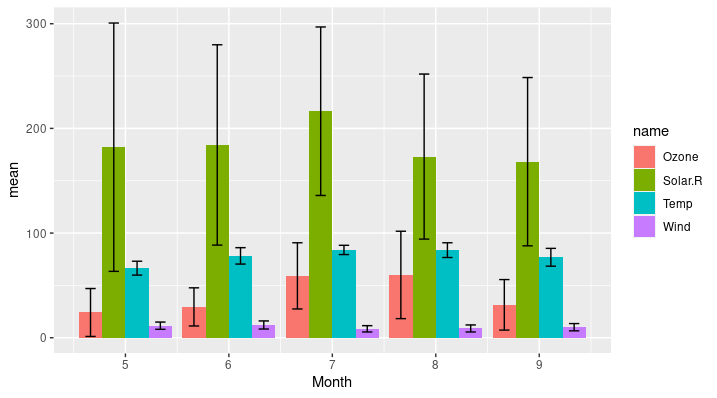

8 Data science and tidyverse II
8.1 dplyr - Important functions
이제 dplyr 패키지에서 제공하는 함수를 사용해 보겠습니다. dplyr을 구성하는 중요한 함수는 다음과 같습니다.
filter()- 샘플 (rows) 선택arrange()- 샘플들의 정렬 순서 변경select()- 변수 (columns) 선택mutate()- 새로운 변수 만들기summarise()- 대표값 만들기group_by()- 그룹별로 계산 수행join()- 두 tibble 또는 data.frame을 병합할 때 사용
이 함수들은 %>%와 함께 쓰이면서 강력한 성능을 발휘합니다. summarise 함수는 특정 값들의 통계 값을 계산해 주는 함수이며 그 외 함수들은 행렬 편집을 위한 함수들로 보시면 되겠습니다. 간단한 예제를 수행하면서 각각의 기능을 살펴보고 왜 dplyr이 널리 사용되고 그 장점이 무엇인지 파악해 보도록 하겠습니다.
iris 데이터는 세 종류의 iris 품종에 대한 꽃잎과 꽃받침의 length와 with를 측정해 놓은 데이터 입니다. head와 str 명령어를 %>%를 이용해서 데이터를 살펴 봅니다.
library(tidyverse)
iris %>% head(10)
iris %>% str8.1.1 filter
먼저 아래와 같이 filter 함수를 사용해서 원하는 조건의 데이터 (샘플)을 골라낼 수 있습니다.
library(dplyr)
head(iris)
iris %>% filter(Species=="setosa")
iris %>% filter(Species=="setosa" | Species=="versicolor")
iris %>% filter(Species=="setosa" & Species=="versicolor")
iris %>%
filter(Species=="setosa" | Species=="versicolor") %>%
dimfilter의 ,로 구분되는 매개변수는 and 로직으로 묶인 조건입니다. 지난 강좌에서 보셨듯 R에서 and는 &, or는 |, 그리고 not은 ! 으로 사용하면 되며 filter에서 ,로 구분된 조건은 and와 같다고 보시면 되겠습니다.

Image from (https://r4ds.had.co.nz/)
8.1.2 arrange
arrange()는 지정된 변수를 기준으로 값의 크기순서로 샘플들의 배열 순서 즉, row의 순서를 바꾸는 기능을 수행합니다. 기본으로 크기가 커지는 순서로 정렬이 진행되며 작아지는 순서를 원할 경우 desc 함수를 사용할 수 있습니다.
iris %>% arrange(Sepal.Length)
iris %>% arrange(desc(Sepal.Length))
iris %>% arrange(Sepal.Length, Sepal.Width)8.1.3 select
select() 는 주어진 데이터셋으로부터 관심있는 변수를 (column) 선택하여 보여줍니다. 다음 helper 함수들은 select 함수와 같이 유용하게 쓰일 수 있습니다.
starts_with(“abc”) - “abc” 로 시작하는 문자열을 갖는 변수 이름 ends_with(“xyz”) - “xyz”으로 끝나는 문자열을 갖는 변수 이름 contains(“ijk”) - “ijk” 문자열을 포함하는 변수 이름 matches(“(.)\1”) - 정규식, 반복되는 문자
head(iris)
iris %>% select(Species, everything()) %>% head(5)
iris %>% select(Species, everything())
iris %>% select(-Species)
iris %>% select(starts_with('S'))
iris %>% select(obs = starts_with('S'))아래는 matches 함수를 사용한 방법 입니다. 좀 더 복잡한 패턴을 적용하여 변수들을 선택할 수 있으며 grep 함수를 사용할 경우도 정규식 패턴을 적용할 수 있습니다.
iris2 <- rename(iris, aavar = Petal.Length)
select(iris2, matches("(.)\\1"))
tmp <-iris[,3:5]
colnames(iris)[grep("^S", colnames(iris))]
iris[,grep("^S", colnames(iris))]
tmp아래 (.)\\1은 하나의 문자 .가 (어떤 문자든) 한 번 더 \\1 사용된 변수 이름을 말하며 이는 aavar 의 aa밖에 없으므로 aavar가 선택됩니다. grep에서 ^ 표시는 맨 처음을 나타내므로 ^S는 S로 시작하는 문자가 되겠습니다. 따라서 grep("^S", colnames(iris))의 경우 컬럼 이름 중 S로 시작하는 이름은 True로 그렇지 않으면 False 값을 리턴합니다.
8.1.4 mutate
mutate() 함수는 새로운 변수를 추가할 수 있는 기능을 제공하며 앞에서 배웠던 within()과 비슷하다고 볼 수 있습니다. 아래와 같이 mutate함수는 sepal_ratio라는 변수를 새로 만들어서 기존 iris 데이터들과 함께 반환해 줍니다.
iris2 <- iris %>% mutate(sepal_ratio = Sepal.Length/Sepal.Width)
head(iris2)8.1.5 summarise
summarise()는 data.frame내 특정 변수의 값들로 하나의 요약값/대푯값을 만들어 줍니다. summarise 함수는 단독으로 쓰이기 보다는 group_by() 기능과 병행해서 쓰이는 경우에 유용하게 쓰입니다. summarise_all() 함수를 사용하면 모든 변수에 대해서 지정된 함수를 실행합니다.
iris %>% summarise(mean(Sepal.Length), m=mean(Sepal.Width))
iris %>%
group_by(Species) %>%
summarise(mean(Sepal.Width))
iris %>%
group_by(Species) %>%
summarise_all(mean)
iris %>%
group_by(Species) %>%
summarise(across(everything(), mean))
iris %>%
group_by(Species) %>%
summarise_all(sd)
iris %>%
group_by(Species) %>%
summarise(across(everything(), sd))8.1.6 join
join 함수는 데이터를 병합해주는 기능을 수행하는 함수 입니다. 네 가지 종류의 함수가 있으며 (left_join(), ’right_join(), 'inner_join(), ’full_join()) 기본적으로 공통되는 이름의 변수를 (key) 이용해서 공통되는 샘플끼리 자동으로 병합해 주는 기능을 수행합니다.by`에서 지정해준 파라메터의 값을 기준으로 기능이 수행 됩니다.
df1 <- data.frame(id=c(1,2,3,4,5,6), age=c(30, 41, 33, 56, 20, 17))
df2 <- data.frame(id=c(4,5,6,7,8,9), gender=c("f", "f", "m", "m", "f", "m"))
inner_join(df1, df2, by="id")
left_join(df1, df2, "id")
right_join(df1, df2, "id")
full_join(df1, df2, "id")
# vs.
cbind(df1, df2)8.2 code comparison
이제 split, apply, combine을 활용하여 평균을 구하는 코드와 dplyr 패키지를 사용하여 만든 코드를 비교해 보도록 하겠습니다. iris 데이터를 분석하여 품종별로 꽃받침의 길이 (Sepal.length)의 평균과 표준편차, 그리고 샘플의 수를 구해보는 코드입니다.
split은 factor형 변수인 Species를 기준으로 iris 데이터를 나누어 주는 역할을 하며 lapply는 list 형 데이터인 iris_split을 각 리스트의 각각의 원소들에 대해서 임의의 함수 function(x)... 를 수행하는 역할을 합니다. 마지막 data.frame으로 최종 경로를 combine 합니다.
iris_split <- split(iris, iris$Species)
iris_means <- lapply(iris_split, function(x){mean(x$Sepal.Length)})
iris_sd <- lapply(iris_split, function(x){sd(x$Sepal.Length)})
iris_cnt <- lapply(iris_split, function(x){length(x$Sepal.Length)})
iris_df <- data.frame(unlist(iris_cnt), unlist(iris_means), unlist(iris_sd))아래는 dplyr 패키지를 사용한 코드 입니다.
iris_df <- iris %>%
group_by(Species) %>%
summarise(n=n(), mean=mean(Sepal.Length), sd=sd(Sepal.Length))위에서 보듯 dplyr 패키지를 사용할 경우 그 결과는 같으나 코드의 가독성과 효율성면에서 장점을 보여줍니다. iris 데이터를 받아서 Species에 명시된 그룹으로 나누고 원하는 함수를 타깃 컬럼에 대해서 적용하라는 의미 입니다. 다음은 모든 변수에 대한 평균을 구하는 코드 입니다.
iris_mean_df <- iris %>%
group_by(Species) %>%
summarise(across(everything(), mean))자세한 ggplot의 내용은 다음시간에 학습하겠지만 각 평균에 대한 막대그래프를 그러보겠습니다.
library(ggplot2)
iris_mean_df2 <- iris_mean_df %>%
pivot_longer(-Species)
ggplot(iris_mean_df2, aes(x=Species, y=value, fill=name)) +
geom_bar(stat="identity", position="dodge")8.3 Airquality example
airquality 데이터는 뉴욕주의 몇몇 지점에서의 공기질을 측정한 데이터입니다. 데이터에서 NA를 제거하고 각 월별로 평균 오존, 자외선, 풍속, 및 온도에 대한 평균과 표준편차를 구해봅니다.
airmean <- airquality %>%
filter(complete.cases(.)) %>%
select(-Day) %>%
group_by(Month) %>%
summarise(across(everything(), mean)) %>%
pivot_longer(-Month, values_to = "mean")
airsd <- airquality %>%
filter(complete.cases(.)) %>%
select(-Day) %>%
group_by(Month) %>%
summarise(across(everything(), sd)) %>%
pivot_longer(-Month, values_to = "sd")errorbar가 있는 막대그래프를 그려보겠습니다. 이를 위해서 먼저 두 테이블을 병합합니다.
airdata <- left_join(airmean, airsd, by=c("Month", "name"))
ggplot(airdata, aes(x=Month, y=mean, fill=name)) +
geom_bar(stat="identity", position="dodge") +
geom_errorbar(aes(ymin=mean-sd, ymax=mean+sd), position=position_dodge(width=0.9), width=0.4)
ggplot2를 이용한 그래프 그리기는 다음 시간에 학습하겠습니다.
8.3.1 Exercise
InsectSprays 데이터는 살충제 6종에 대한 살충력을 (죽은 벌래의 마릿수) 나타내는 데이터이다. 각 살충제별로 평균과 표준편차를 구하시오
8.3.2 Exercise
dplyr 패키지의 starwars 는 스타워즈 영화에 나오는 등장인물들을 분석한 데이터셋 이다. 종족에 따른 키의 평균과 표준편차를 구하시오. (NA 데이터는 제외하고 분석)

이 저작물은 크리에이티브 커먼즈 저작자표시-비영리-변경금지 4.0 국제 라이선스에 따라 이용할 수 있습니다.